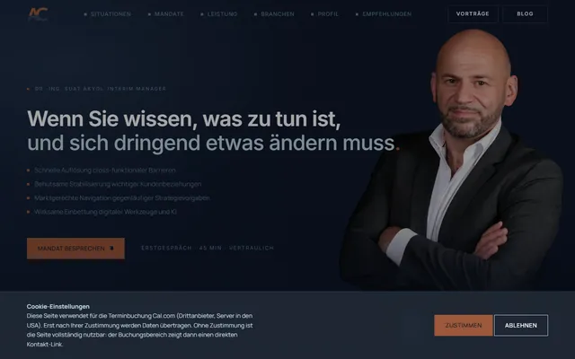
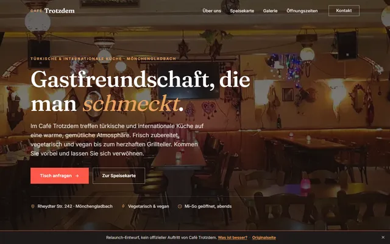

Referenzen
Kein Einzelfall.
Von der eigenen Website über ein Café und ein Pilates-Studio bis zu Hightech, Handwerk und Steuerberatung, alle mit KI-Unterstützung gebaut.




Kurz und ehrlich: was ich gemacht habe, was besser ist und warum sich die Zusammenarbeit lohnt. Springen Sie direkt zum passenden Abschnitt.
Ihre Inhalte und Bilder, neu gestaltet: der Hero mit klarer Bühne statt flachem Grau, die Farben harmonisiert, die Google-Bewertungen elegant eingebunden und WhatsApp durchgehend griffbereit.
Von der einfachen Seite bis zur High-End-Plattform. Zwei Marker: wo dieser Entwurf steht und wo Ihr heutiger Auftritt läge, wenn man ihn vollständig neu bauen würde.
Olive und Gelb bleiben, das laute Orange und die bunten Presse-Kästen weichen einer klaren, warmen Palette. Eine Schrift, die zum Business-Coaching passt.
Nebeneinander: die bestehende WordPress-Seite und dieser Entwurf.
| Merkmal | Bisher | Entwurf |
|---|---|---|
| Design: individuell statt Baukasten | WordPress | Individuell |
| Ruhiges, harmonisches Farbkonzept | Farbenvielfalt | Ja |
| Klare Handlungsführung (WhatsApp, Kennenlernen) | Verstreut | Durchgängig |
| Google-Bewertungen elegant eingebunden | Widget | Panel |
| Branchen-Schema (Person / ProfessionalService) | Basis | Erweitert |
| Auffindbar für KI-Suche (GEO) | Eingeschränkt | Optimiert |
| Ladezeit & mobile Bedienung | Schwer | Schlank |
Ehrlich und gemessen, nicht schlechtgeredet. Manches davon ist bei WordPress nur mit (teils kostenpflichtigen) Plugins oder gar nicht sauber lösbar.
Sprechende Titel, saubere Struktur, Branchendaten. Google versteht, wer Sie sind und wofür Sie stehen.
ChatGPT und Perplexity empfehlen, was strukturiert verständlich ist. Ihre Daten liefern genau diese Signale.
Kaum Fremd-Code, keine ungefragten Tracker, selbst gehostete Schriften. DSGVO-freundlich und flott, gerade mobil.
Ein Faden führt zum Kennenlernen, WhatsApp und Bewertungen sind immer griffbereit. Auch per Tastatur nutzbar.
Von der eigenen Website über ein Café und ein Pilates-Studio bis zu Hightech, Handwerk und Steuerberatung, alle mit KI-Unterstützung gebaut.


Weder anonyme Großagentur noch Gelegenheitsanbieter, sondern genau der Sweet Spot dazwischen.
Ein vollständiger Auftritt zum Festpreis, mit klarem Anfang und Ende. Fest heißt fest.
Ein erfahrener Partner, ein Ansprechpartner, klare Verantwortung. Alles aus einer Hand, ohne Agentur-Overhead.
Terminbuchung, datensparsame Analytics, Blog, später ein KI-Assistent für Erstfragen. In Stufen von kostenfrei bis kleine Monatsgebühr.
Volle Nutzungsrechte, kein Abo-Zwang, kein Nachverkauf durch die Hintertür. Betreuung nach Bedarf.